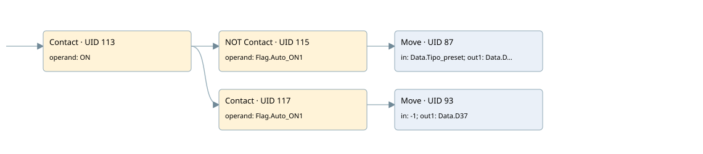

status display in supervisor
auto start motors · 검색 색인 순서 2 · 원본 내부 NID 추정 2
백업 PLF 원본의 2659691 바이트 위치에서 복원한 XML. 검색 문서 1842의 객체 키 16102200c210000000000000와 연결했다. 이름 해석 7/7개. 남은 RefId는 상수 또는 미해석 참조다.
연결 구조 다시 그리기
원본 Part/PCon/Wire를 이용한 연결도다. TIA 화면의 래더 배치 또는 실행 결과를 재현한 그림은 아니다. 핀 연결은 아래 표와 원본 XML을 기준으로 읽는다. 노드 위에 마우스를 두면 피연산자 이름을 볼 수 있다.

접점·코일·블록과 피연산자
| Part UID | Gate | Negated 핀 | 연결 피연산자 |
|---|---|---|---|
| 113 | Contact | operand = ON | |
| 115 | Contact | operand | operand = Flag.Auto_ON1 |
| 87 | Move | in = Data.Tipo_preset; out1 = Data.D37 | |
| 117 | Contact | operand = Flag.Auto_ON1 | |
| 93 | Move | in = -1; out1 = Data.D37 |
접점 경로를 펼친 조건식
Contact·O/A·비교기의 원본 연결을 읽기 쉽게 펼친 보조 해석이다. POWER는 전원 레일 시작을 뜻한다. 호출 블록·에지·타이머의 내부 동작과 다중 쓰기 순서는 이 표로 실행 검증하지 않았다. 미해석 핀과 RefId는 원문 연결표에서 확인한다.
| UID | 동작 | 대상 | 원본 접점 경로 | 내용 |
|---|---|---|---|---|
| 87 | Move | Data.D37 | (ON AND NOT [Flag.Auto_ON1]) | Move 입력 Data.Tipo_preset |
| 93 | Move | Data.D37 | (ON AND Flag.Auto_ON1) | Move 입력 -1 |
원본 배선 연결
| Wire UID | 동일 Wire 연결 끝점 |
|---|---|
| 119 | Powerrail {} ↔ Part 113.in |
| 103 | ORef 96 (ON) ↔ Part 113.operand |
| 114 | Part 113.out ↔ Part 115.in ↔ Part 117.in |
| 104 | ORef 97 (Flag.Auto_ON1) ↔ Part 115.operand |
| 116 | Part 115.out ↔ Part 87.en |
| 106 | ORef 98 (Data.Tipo_preset) ↔ Part 87.in |
| 107 | Part 87.out1 ↔ ORef 99 (Data.D37) |
| 108 | ORef 100 (Flag.Auto_ON1) ↔ Part 117.operand |
| 118 | Part 117.out ↔ Part 93.en |
| 110 | ORef 101 (-1) ↔ Part 93.in |
| 111 | Part 93.out1 ↔ ORef 102 (Data.D37) |
식별자 해석 근거 7개
| ORef UID | RefId | 이름 | IdentXmlPart 파일 | 해석 방법 |
|---|---|---|---|---|
| 96 | 1 | ON | 0575-IdentXmlPart.xml | UID/RID + search-text + NID agreement |
| 97 | 4 | Flag.Auto_ON1 | 0577-IdentXmlPart.xml | UID/RID + search-text + NID agreement |
| 98 | 12 | Data.Tipo_preset | 0577-IdentXmlPart.xml | UID/RID + search-text + NID agreement |
| 99 | 13 | Data.D37 | 0577-IdentXmlPart.xml | UID/RID + search-text + NID agreement |
| 100 | 4 | Flag.Auto_ON1 | 0577-IdentXmlPart.xml | UID/RID + search-text + NID agreement |
| 101 | 15 | -1 | 0578-IdentXmlPart.xml | literal candidate: UID/RID/NID + nearby named declarations + search-text agreement |
| 102 | 13 | Data.D37 | 0577-IdentXmlPart.xml | UID/RID + search-text + NID agreement |
검색 코드 보조 자료
참조 명칭을 찾기 위한 자료이며 실행 순서나 AND/OR 관계는 위 연결표로 확인한다.
"on" "flag".auto_on1 move "data".tipo_preset "flag".auto_on1 move -1 "data".d37 "data".d37